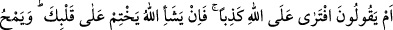
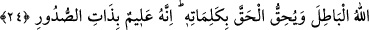

Şâir der ki:
Bedenimdeki her kıl onun hediyesidir.
Her bir kılım için neden şükretmeyeyim?
Göz, ağız, kulak ne varsa hepsini sana verdi,
Eğer akıllıysan, onun istemediğini dinleme.
24. Yoksa onlar, (senin için) Allah’a karşı yalan uydurdu mu derler? Allah dilerse
senin kalbini de mühürler. Ve Allah bâtılı yok eder; sözleriyle hakkı ortaya koyar.
Şüphesiz O, kalplerde olanları bilendir.
“Yoksa onlar” Mekke kâfirleri, senin için Muhammed “Allah’a karşı” peygamberlik
iddiâsıyla ve Kur’an okuyarak “yalan uydurdu mu derler?”
Bu ifâde geride 21. âyetteki “yoksa onların ortakları mı var?” sözünden idrâb; yani
oradaki ifâdeden sarf-ı nazarla yeni bir söze başlamaktır. Buradaki “hemze” sitemli
inkâr içindir. Sanki şöyle denmiştir: Peygamber (s.a.) gibi birine iftirâ mı nisbet
ediyorlar. Özellikle yalanın en büyüğü ve en çirkini olan Allah’a iftirâ?
İftirâ ile yalan arasındaki fark şudur: İftirâ kişinin kendinden bir şeyler uydurmasıdır.
Yalan ise bu konuda bazen başkasını taklidden ibâret de olabilir.
“Allah dilerse senin kalbini de mühürler.” Bu ifâde, müşriklerin sözlerinin bâtıl
olduğuna delildir. Şu vechile ki, Peygamber (s.a.) şâyet Allah’a iftirâ etseydi, Allah onu
bu durumdan kesinlikle men ederdi. Bunun izâhı şöyledir: Kur’an’ın Allah’a iftirâ
olduğunu iddiâ etmek müşriklerin sözüdür. Onlar bu sözleriyle, “Allah bu Kur’an’ın
peygemberden sudûr etmesini değil aksine sudûr etmemesini dilemektedir”
demektedirler. Bunun gereği olarak Yüce Allah’ın onu bu işten kesin bir şekilde men
etmesi gerekir. Sanki şöyle denmiş olmaktadır: Şâyet bu Kur’an Allah’a iftirâ olsaydı
Allah bu Kur’an’ın Peygamber’den meydana gelmemesini dilerdi. Bunu dileyince de
senin kalbini mühürlerdi. Böyle olunca artık senin kalbine Kur’an’ın mânâlarından bir
mânâ gelemez. Hatta sen Kur’an harflerinden bir harf bile okuyamaz, konuşamazsın.
Halbuki gerçek böyle değildir. Vahiy tabii seyri içerisinde zaman zaman, peyderpey
gelmeye devam etmektedir. Bu da Kur’an’ın Allah katından olduğunu açık bir şekilde
ortaya koymaktadır.
et-Te’vilâtü’n-Necmiyye’de şöyle denmiştir: Yani ey Muhammed (s.a.)! Şâyet sen
Allah’a iftirâ etmiş olsaydın Allah senin kalbini mühürlerdi ve kendi mesajını oradan
götürürdü. Fakat sen Allah’a karşı yalan uydurup iftirâ etmedin, Allah’da senin kalbini
mühürlemedi.